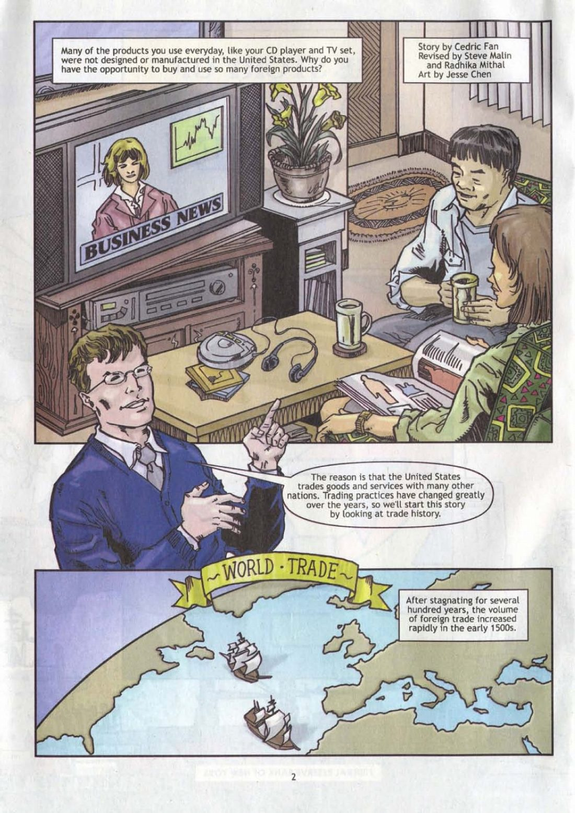

You're the fact-checker. For each part: read the comic on the left → get the check right → write 1–2 sentences. Done = 4 green checks + 4 answers, then turn in at the bottom.
- Globalization = countries getting more connected by trade, travel, and ideas
- Foreign = from another country
- Efficient = fast, with little waste
- Comparative advantage = what a country is best at making, compared with the other things it could make
- Trade barrier = a rule that makes trade harder, like a tax on imports
- Displaced workers = people who lose their jobs when the work moves

Click the page to make it bigger.
Turn in your work
Your work saves on this device, so you can come back later. Your teacher sees it after you turn it in.
Comic: The Story of Foreign Trade and Exchange (2008 edition), Federal Reserve Bank of New York, a free classroom comic. Scan from FRASER, Federal Reserve Bank of St. Louis. Some pages cropped to today's reading.